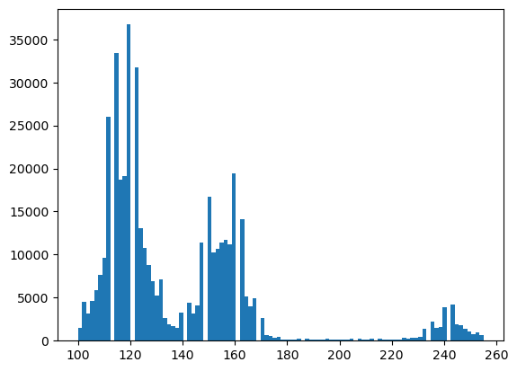
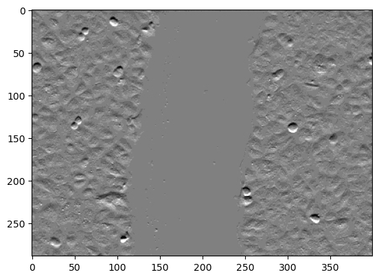
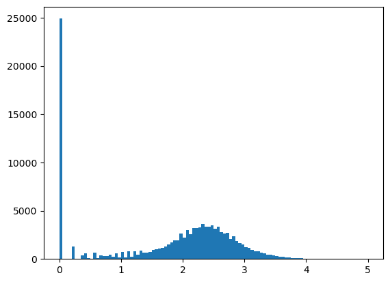
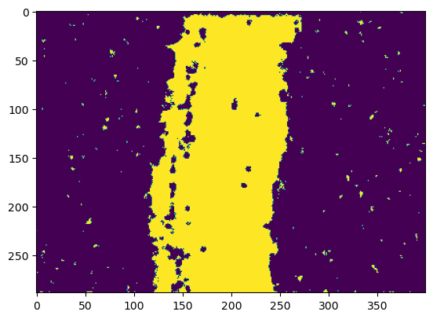

DIP-Introductory python tutorials for image processing(51-58)
目录
- Tutorial 51 - What is image thresholding and segmentation
- Tutorial 52 - Auto-thresholding for multiple regions _using multi-otsu
- Tutorial 53 - Using texture to segment images -demo in python
Tutorial 51 - What is image thresholding and segmentation
What is image segmentation? 什么是图像分割?
And how is it different than thresholding? 它和阈值法有什么不同?
Image segmentation is the process of partitioning a digital image into multiple segments(image objects).
- 图像分割是将一幅数字图像分割成多个段(图像对象)的过程。
Image thresholding is a simple form of image segmentation, it is a way to create a binary image based on setting a threshold value on the pixel intensity of the original image.
- 图像阈值分割是图像分割的一种简单形式，它是在原始图像的像素强度上设置一个阈值的基础上创建一个二值图像的方法。

OpenCV —— 阈值分割（直方图技术法，熵算法，Otsu，自适应阈值算法）
|
<matplotlib.image.AxesImage at 0x15586e075e0>

- Separate blue channels as they contain nuclei pixels (DAPI).
- 分开蓝色通道，因为它们包含核像素(DAPI)。
|
<matplotlib.image.AxesImage at 0x20c6bc29a60>

|
(array([8.12033e+05, 3.47050e+04, 2.10950e+04, 3.48210e+04, 4.78370e+04,
1.07928e+05, 5.22380e+04, 4.82100e+04, 4.30030e+04, 3.66300e+04,
5.45780e+04, 2.04160e+04, 1.62930e+04, 1.28170e+04, 1.05070e+04,
1.52520e+04, 5.43100e+03, 4.38900e+03, 3.60500e+03, 2.90800e+03,
4.45800e+03, 1.71800e+03, 1.54000e+03, 1.34400e+03, 1.21900e+03,
2.06400e+03, 9.29000e+02, 8.15000e+02, 8.25000e+02, 7.36000e+02,
1.44100e+03, 6.95000e+02, 6.53000e+02, 6.37000e+02, 6.56000e+02,
1.30700e+03, 6.35000e+02, 6.70000e+02, 6.42000e+02, 6.53000e+02,
1.44100e+03, 7.63000e+02, 7.41000e+02, 8.87000e+02, 8.89000e+02,
1.84300e+03, 1.05800e+03, 1.03700e+03, 1.06800e+03, 1.09200e+03,
2.30900e+03, 1.16800e+03, 1.22000e+03, 1.28600e+03, 1.33500e+03,
2.73900e+03, 1.33800e+03, 1.43900e+03, 1.44000e+03, 1.51700e+03,
2.97600e+03, 1.54400e+03, 1.50600e+03, 1.54700e+03, 1.53600e+03,
3.21800e+03, 1.54400e+03, 1.64800e+03, 1.61200e+03, 1.61200e+03,
3.08900e+03, 1.53400e+03, 1.50400e+03, 1.53300e+03, 1.50700e+03,
2.88000e+03, 1.45900e+03, 1.38300e+03, 1.37400e+03, 1.38100e+03,
2.67000e+03, 1.33800e+03, 1.24400e+03, 1.22500e+03, 1.16200e+03,
2.38500e+03, 1.17100e+03, 1.13000e+03, 1.08200e+03, 1.04700e+03,
2.03100e+03, 1.03800e+03, 9.89000e+02, 9.92000e+02, 8.93000e+02,
1.78600e+03, 8.82000e+02, 7.94000e+02, 7.79000e+02, 1.52600e+03]),
array([ 0. , 1.2, 2.4, 3.6, 4.8, 6. , 7.2, 8.4, 9.6,
10.8, 12. , 13.2, 14.4, 15.6, 16.8, 18. , 19.2, 20.4,
21.6, 22.8, 24. , 25.2, 26.4, 27.6, 28.8, 30. , 31.2,
32.4, 33.6, 34.8, 36. , 37.2, 38.4, 39.6, 40.8, 42. ,
43.2, 44.4, 45.6, 46.8, 48. , 49.2, 50.4, 51.6, 52.8,
54. , 55.2, 56.4, 57.6, 58.8, 60. , 61.2, 62.4, 63.6,
64.8, 66. , 67.2, 68.4, 69.6, 70.8, 72. , 73.2, 74.4,
75.6, 76.8, 78. , 79.2, 80.4, 81.6, 82.8, 84. , 85.2,
86.4, 87.6, 88.8, 90. , 91.2, 92.4, 93.6, 94.8, 96. ,
97.2, 98.4, 99.6, 100.8, 102. , 103.2, 104.4, 105.6, 106.8,
108. , 109.2, 110.4, 111.6, 112.8, 114. , 115.2, 116.4, 117.6,
118.8, 120. ]),
<BarContainer object of 100 artists>)

- Manual thresholding by setting threshold value to numpy array
- 手动设置阈值
- After thresholding we will get a binary image.
- 阈值化后得到二值图像。
|
<matplotlib.image.AxesImage at 0x20c6bb277f0>

- Using opencv to perform manual threshold
- 使用opencv执行手动阈值
- All pixels above 40 will have pixel value 255
- 所有高于40的像素的像素值都是255
- Should be exactly same as the above method.
- 应该与上面的方法完全相同。
|
(40.0,
array([[255, 255, 255, ..., 0, 0, 0],
[255, 255, 255, ..., 0, 0, 0],
[255, 255, 255, ..., 0, 0, 0],
...,
[ 0, 0, 0, ..., 0, 0, 0],
[ 0, 0, 0, ..., 0, 0, 0],
[ 0, 0, 0, ..., 0, 0, 0]], dtype=uint8))
|
<matplotlib.image.AxesImage at 0x20c00133220>
AUTO using OTSU
- Using opencv for otsu based automatic thresholding
- 使用opencv进行基于otsu的自动阈值分割
- Reports a value of 50 as threshold for the nuclei.
- 报告值 50 作为细胞核的阈值。
|
(50.0,
array([[255, 255, 0, ..., 0, 0, 0],
[255, 255, 255, ..., 0, 0, 0],
[255, 255, 255, ..., 0, 0, 0],
...,
[ 0, 0, 0, ..., 0, 0, 0],
[ 0, 0, 0, ..., 0, 0, 0],
[ 0, 0, 0, ..., 0, 0, 0]], dtype=uint8))
- np.digitize needs bins to be defined as an array
- 需要将这些二进制数据定义为数组
- So let us convert the threshold value to an array
- 让我们将阈值转换为一个数组
- np.digitize assign values 0, 1, 2, 3, … to pixels in each class.
- np.digitize 赋值0,1,2,3，… 到每个类中的像素。
- For binary it wold be 0 and 1.
- 对于二进制，它是0和1。
|
<matplotlib.image.AxesImage at 0x20c00a05ca0>

Tutorial 52 - Auto-thresholding for multiple regions _using multi-otsu
|
|
|
<matplotlib.image.AxesImage at 0x163340e4e20>

|
(array([ 1503., 4537., 3200., 4608., 5865., 7691., 9625., 25963.,
0., 33377., 18666., 19131., 36722., 0., 31707., 13031.,
10769., 8827., 6923., 5264., 7160., 2595., 1889., 1722.,
1539., 3244., 0., 4418., 3113., 4053., 11409., 0.,
16772., 10292., 10680., 11360., 11665., 11160., 19404., 0.,
14149., 5101., 3961., 4908., 0., 2600., 669., 518.,
354., 477., 172., 160., 114., 126., 255., 0.,
267., 142., 134., 87., 123., 204., 84., 122.,
98., 104., 107., 206., 0., 207., 108., 116.,
256., 0., 244., 137., 140., 138., 166., 170.,
383., 237., 316., 343., 477., 1422., 0., 2259.,
1469., 1623., 3926., 0., 4171., 1900., 1763., 1432.,
1093., 809., 1017., 603.]),
array([100. , 101.55, 103.1 , 104.65, 106.2 , 107.75, 109.3 , 110.85,
112.4 , 113.95, 115.5 , 117.05, 118.6 , 120.15, 121.7 , 123.25,
124.8 , 126.35, 127.9 , 129.45, 131. , 132.55, 134.1 , 135.65,
137.2 , 138.75, 140.3 , 141.85, 143.4 , 144.95, 146.5 , 148.05,
149.6 , 151.15, 152.7 , 154.25, 155.8 , 157.35, 158.9 , 160.45,
162. , 163.55, 165.1 , 166.65, 168.2 , 169.75, 171.3 , 172.85,
174.4 , 175.95, 177.5 , 179.05, 180.6 , 182.15, 183.7 , 185.25,
186.8 , 188.35, 189.9 , 191.45, 193. , 194.55, 196.1 , 197.65,
199.2 , 200.75, 202.3 , 203.85, 205.4 , 206.95, 208.5 , 210.05,
211.6 , 213.15, 214.7 , 216.25, 217.8 , 219.35, 220.9 , 222.45,
224. , 225.55, 227.1 , 228.65, 230.2 , 231.75, 233.3 , 234.85,
236.4 , 237.95, 239.5 , 241.05, 242.6 , 244.15, 245.7 , 247.25,
248.8 , 250.35, 251.9 , 253.45, 255. ]),
<BarContainer object of 100 artists>)

MANUAL 手工阈值分割
- Can perform manual segmentation but auto works fine
- 能执行手动分割，但自动工作精细
|
|
array([[[0., 0., 1.],
[0., 0., 1.],
[0., 0., 1.],
...,
[0., 1., 0.],
[0., 1., 0.],
[0., 1., 0.]],
[[0., 0., 1.],
[0., 0., 1.],
[0., 0., 1.],
...,
[0., 1., 0.],
[0., 1., 0.],
[0., 1., 0.]],
[[0., 0., 1.],
[0., 0., 1.],
[0., 0., 1.],
...,
[0., 1., 0.],
[0., 1., 0.],
[0., 1., 0.]],
...,
[[0., 0., 1.],
[0., 0., 1.],
[0., 0., 1.],
...,
[0., 1., 0.],
[0., 1., 0.],
[0., 1., 0.]],
[[0., 0., 1.],
[0., 0., 1.],
[0., 0., 1.],
...,
[0., 1., 0.],
[0., 1., 0.],
[0., 1., 0.]],
[[0., 0., 1.],
[0., 0., 1.],
[0., 0., 1.],
...,
[0., 1., 0.],
[0., 1., 0.],
[0., 1., 0.]]])
|
<matplotlib.image.AxesImage at 0x16334046340>

AUTO 自动
|
- Digitize (segment) original image into multiple classes.
- 将原始图像数字化(分割)成多个类。
- np.digitize assign values 0, 1, 2, 3, … to pixels in each class.
将原始图像数字化(分割)成多个类。
|
<matplotlib.image.AxesImage at 0x163340a6a30>

|
- We can use binary opening and closing operations to clean up.
- 我们可以使用二进制的膨胀和腐蚀操作来清理。
- Open takes care of isolated pixels within the window
- Open负责处理窗口内的独立像素
- Closing takes care of isolated holes within the defined window
- 关闭处理已定义窗口内的隔离孔

|
<matplotlib.image.AxesImage at 0x1633505ba00>

Tutorial 53 - Using texture to segment images -demo in python
Variance - exceptation of the squared deviation of a random variable from its mean.Could be a good indicator of texture.
- 方差 -一个随机变量的方差的平均值的例外。可能是 Texture 的好指标。
Entropy - quantifies disorder - a very good metric to quantify texture
- 熵 -量化无序-一个非常好的量化纹理的度量
Gabor convolutional kernal - Gabor卷积核
其中:
$x’=x\cos(\theta)+y\sin(\theta)$
$y’=-x\sin(\theta)+y\cos(\theta)$
|
|
<matplotlib.image.AxesImage at 0x22ee31fc790>

Variance - not a great way to quantify texture
- 方差 -不是一个量化纹理的好方法
|
<matplotlib.image.AxesImage at 0x22ee37a4d90>

论文阅读：Gabor Convolutional Networks_OopsZero的博客-CSDN博客_gabor卷积
GABOR - A great filter for texture but usually efficient.
- GABOR -一个很好的纹理过滤器，但通常是有效的。
if we know exact parameters. Good choice for generating features for machine learning
- 如果我们知道精确的参数。为机器学习生成特征的好选择。
|
<matplotlib.image.AxesImage at 0x22ee37d7430>

Entropy: Entropy quantifies disorder.
- 熵: 熵量化无序。
Since cell region has high variation in pixel values the entropy would be higher compared to scratch region
- 由于细胞区域的像素值变化较大，熵值将高于划痕区域
|
<matplotlib.image.AxesImage at 0x22ee39d3d60>

Scratch Analysis - single image
- 划痕分析 -单幅图像
Now let us use otsu to threshold high vs low entropy regions.
- 现在让我们用otsu来阈值高熵区和低熵区。
|
(array([2.4906e+04, 0.0000e+00, 0.0000e+00, 0.0000e+00, 1.2640e+03,
4.0000e+00, 1.1000e+01, 3.4300e+02, 5.5700e+02, 1.0300e+02,
5.0000e+00, 6.8000e+02, 1.1500e+02, 3.4200e+02, 3.2900e+02,
3.1000e+02, 4.3700e+02, 1.9700e+02, 5.8100e+02, 1.6200e+02,
7.0100e+02, 1.4600e+02, 7.9900e+02, 2.1600e+02, 8.2000e+02,
4.6400e+02, 8.6300e+02, 6.2200e+02, 6.5100e+02, 7.2900e+02,
9.3500e+02, 1.0210e+03, 1.0650e+03, 1.1500e+03, 1.3230e+03,
1.5200e+03, 1.7200e+03, 1.9000e+03, 1.9490e+03, 2.6150e+03,
2.2130e+03, 3.0250e+03, 2.5620e+03, 3.1800e+03, 3.1780e+03,
3.2440e+03, 3.6230e+03, 3.3250e+03, 3.3660e+03, 3.5170e+03,
3.1100e+03, 3.3400e+03, 2.7800e+03, 2.6460e+03, 2.6750e+03,
2.0790e+03, 2.3660e+03, 1.8520e+03, 1.6350e+03, 1.5170e+03,
1.2040e+03, 1.1810e+03, 9.1000e+02, 8.3300e+02, 7.9300e+02,
6.5600e+02, 5.7100e+02, 4.1800e+02, 4.1400e+02, 3.6200e+02,
2.7300e+02, 2.2500e+02, 2.0900e+02, 1.8400e+02, 1.5600e+02,
1.0200e+02, 7.1000e+01, 5.7000e+01, 6.6000e+01, 3.2000e+01,
3.2000e+01, 2.0000e+01, 1.7000e+01, 5.0000e+00, 1.2000e+01,
2.0000e+00, 5.0000e+00, 2.0000e+00, 0.0000e+00, 0.0000e+00,
0.0000e+00, 0.0000e+00, 0.0000e+00, 0.0000e+00, 0.0000e+00,
0.0000e+00, 0.0000e+00, 0.0000e+00, 0.0000e+00, 0.0000e+00]),
array([0. , 0.05, 0.1 , 0.15, 0.2 , 0.25, 0.3 , 0.35, 0.4 , 0.45, 0.5 ,
0.55, 0.6 , 0.65, 0.7 , 0.75, 0.8 , 0.85, 0.9 , 0.95, 1. , 1.05,
1.1 , 1.15, 1.2 , 1.25, 1.3 , 1.35, 1.4 , 1.45, 1.5 , 1.55, 1.6 ,
1.65, 1.7 , 1.75, 1.8 , 1.85, 1.9 , 1.95, 2. , 2.05, 2.1 , 2.15,
2.2 , 2.25, 2.3 , 2.35, 2.4 , 2.45, 2.5 , 2.55, 2.6 , 2.65, 2.7 ,
2.75, 2.8 , 2.85, 2.9 , 2.95, 3. , 3.05, 3.1 , 3.15, 3.2 , 3.25,
3.3 , 3.35, 3.4 , 3.45, 3.5 , 3.55, 3.6 , 3.65, 3.7 , 3.75, 3.8 ,
3.85, 3.9 , 3.95, 4. , 4.05, 4.1 , 4.15, 4.2 , 4.25, 4.3 , 4.35,
4.4 , 4.45, 4.5 , 4.55, 4.6 , 4.65, 4.7 , 4.75, 4.8 , 4.85, 4.9 ,
4.95, 5. ]),
<BarContainer object of 100 artists>)

- Now let us binarize the entropy image
- 现在我们把熵图像二值化
|
1.2953342370696572
|
<matplotlib.image.AxesImage at 0x22ee3ab2280>

|
Scratched area is: 33485 Square pixels
Scratched area in sq. microns is: 6780.712500000001 Square pixels